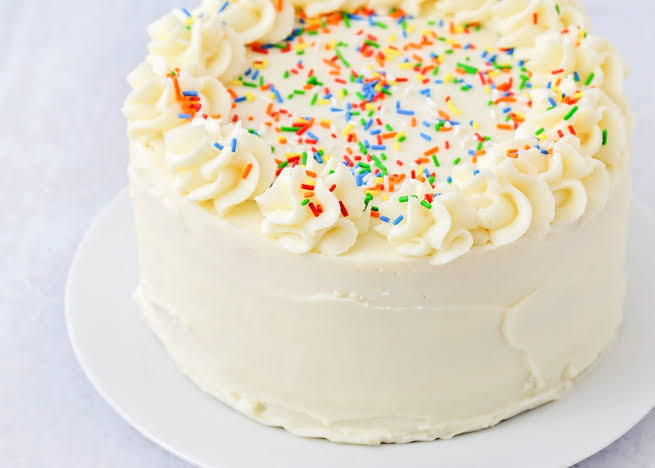

Vanilla Cake
I always thought that there were so many of these recipes out there that I’d stick to more unique ones.
But really, I think the world needs my version of this simple, classic, delicious flavor combination.
Truthfully, most of my cakes use this vanilla cake recipe, but I’ve never paired it with a vanilla buttercream.
I know it’s easy enough for some people to grab a cake recipe from one post and a frosting recipe from another, but for those of us that are a little less comfortable mixing and matching for fear of epic failures, I’m putting it together for you into one recipe
Back to Homepage